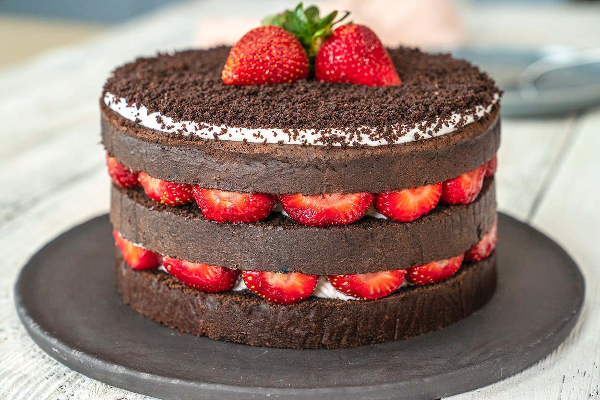

Pastane vitrinlerinde gördüğünüz pastaları evinizde kolayca yapabilmenize yardımcı olacak mois pasta tarifimiz ile sizleri baş başa bırakıyoruz. Tüm püf noktalarıyla misafirlerinize bir pasta ustasının elinden çıkmış gibi pastalar hazırlamak için hemen mutfağa geçin. Afiyet olsun!

Bu resimde gördüğünüz şey tam olarak saf mutluluk
Sıkma torbası kullanmak yerine spatula yardımıyla da krem şantiyi kekin üzerine ekleyebilirsiniz.
Kullandığımız pasta çemberi küçük boy (14-17 cm) boyutundadır. Büyük boy bir kek çemberinde hazırlayacaksanız tarifi 2 ölçü olarak hazırlamalısınız.